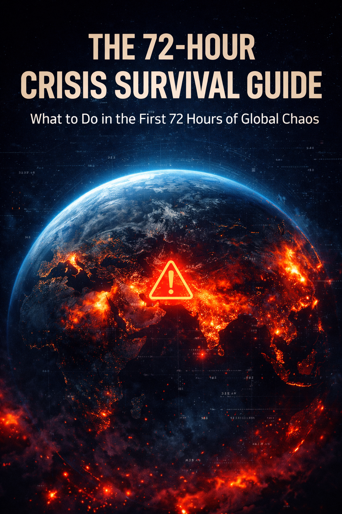

What to Do in the First 72 Hours of Global Chaos
War. Infrastructure failure. Economic collapse. The first 72 hours determine who stays calm and who panics. This guide shows exactly how to prepare and act.
Download The Survival Guide — €9
The first 72 hours decide everything. Understand what actually happens when governments lose control and systems begin to fail.
Most people panic and make fatal decisions. Learn the critical mistakes people make in the first hours of a crisis.
A simple, practical plan to protect your family, your resources, and your decisions when chaos begins.
★★★★★
“This guide explains crisis preparation in a very clear and practical way. I never thought about the first 72 hours like this before.”
★★★★☆
“Very interesting framework. The focus on the first 72 hours makes the advice much more practical than most survival content.”
★★★★★
“Clear, realistic and easy to follow. It made me rethink what preparation actually means.”
★★★★☆
“Short but impactful. The timeline explanation of crisis escalation is what makes this guide valuable.”
★★★★★
“A solid breakdown of how systems behave under pressure. Very well structured.”
★★★★☆
“This guide focuses on decisions people actually face during chaos, not just theory.”
★★★★★
“Probably the most practical explanation of early crisis response I've seen.”
★★★★★
“A surprisingly realistic breakdown of what happens when systems fail. The 72-hour framework makes a lot of sense.”
★★★★★
“Everyone talks about survival but this guide actually explains the timeline of chaos and how to stay ahead of it.”
Instant download • Secure payment • Read on any device
Leave a Comment